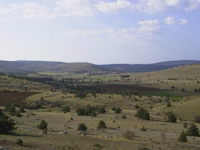
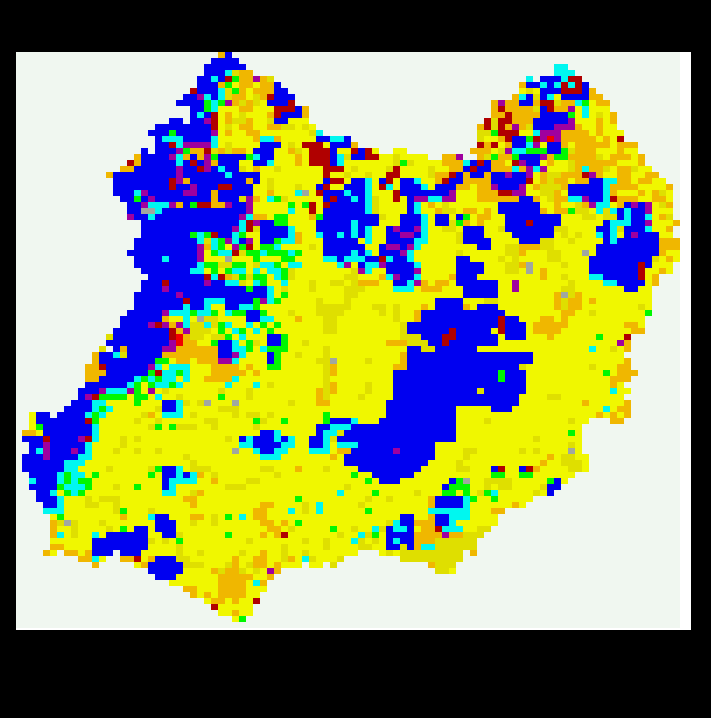

|
Mejan
Pine encroachment of natural ecosystems (Causse Mejan)Michel Etienne (Inra), Christophe Le Page (Cirad)  Mejan is a model which simulates contrasting management behaviour in the face of pine encroachment in natural ecosystems with tremendous biological diversity. The three agents (sheep farmers, foresters, and a national park) are involved in the management of land subject to encroachment by Pinus sylvestris and P. nigra with different temporal and spatial scales. All the agents are concerned by this global biological process although it affects their management goals (sheep production, timber production, nature conservation) in very different ways.The natural resources are defined by the vegetation types according to the combination of vegetation layers (tree, shrub or grass), the topographic position, land tenure and conservation value (fauna, flora, landscape). The land is represented by a grid made from the rasterization of a real vectorial map. A model incorporates changes in vegetation due to pine encroachment according to trends of natural succession and land or timber management decisions. Grazing management strategies are based on the crop/pasture ratio, grazing pressure, distance to housing, and the farmers environmental awareness. Forest management strategies are related to the status of the forest owner and the legal constraints to afforestation management. National range management focuses on pine destruction according to the lands value -in terms of flora and fauna- and the maintenance of open landscapes.  The two main goals of the modelling approach are to compare contrasting management scenarios and to allow the agents to exchange their perceptions of the process of pine encroachment. If this approach is successful, it may lead to the development of common land management strategies. The most important original point is that of combining the MAS with a role play with constant feedback between the two. A first MAS is used to represent the system according to the available scientific knowledge of the ecological process and the available information on agents practices. Then, a simplified version is developed so that the real agents can understand the process and see a common representation of the system. Lastly, the simplified MAS is part of a role play used to show how, in a neutral but realistic context, the agents react to likely changes in land dynamics that may occur in the near future. For more information, contact
the author. |